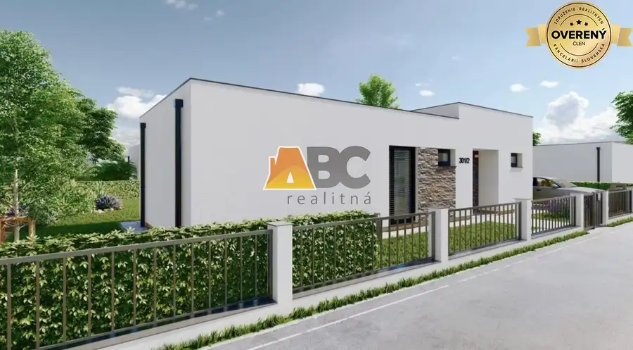
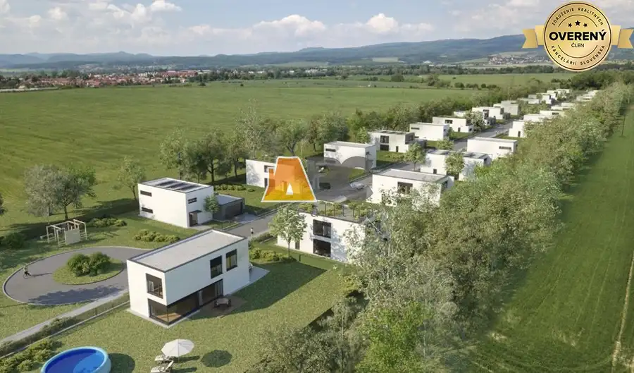

Nový rodinný dom v tichej lokalite na Sliači
Sliač


- Dispozícia3-izbový
- Plocha87.7 m²
- Poschodie0.
- Stavholopriestor
- Vlastníctvofiremné
O nehnuteľnosti
ABC realitná exkluzívne ponúka na predaj novostavbu 3-izbového bungalovu vo vynikajúcej lokalite. Táto ponuka je ideálnou voľbou pre každého, kto hľadá pokojné rodinné bývanie v tesnom dotyku s prírodou, no zároveň vyžaduje kompletnú občiansku vybavenosť a chce mať dobrú dostupnosť do Banskej Bystrice aj Zvolena.
Dom sa predáva buď ako drevodom, pripadne murovaná stavba v stave holodom.
Dokončenie domu približne do 9 mesiacov od rezervácie.
HLAVNÉ BENEFITY
Poctivá novostavba:
Moderný, bezbariérový bungalov od skúseného stavebníka, ktorého prácu preveril čas. Kupujete kvalitu so zárukou.
Strategická poloha:
Ste za pár minút v centre veľkých miest alebo na diaľnici. Výborné vlakové a autobusové spojenie s Banskou Bystricou a Zvolenom ocenia hlavne mladí.
Sloboda a súkromie:
Zabudnite na susedov za stenou, hluk na chodbe či cigaretový dym pod oknami ako v byte. Vlastný dom vám prináša pokoj, kde si pravidlá určujete vy.
Moderná dispozícia a prepojenie so záhradou:
Dom je navrhnutý maximálne prakticky a bez schodov. Srdcom celého bývania je veľkorysá spoločenská miestnosť, kde sa trávi najviac času. Veľkým benefitom je priamy východ na terasu z izieb.
Skvelá investícia:
Trvácny dom z kvalitných materiálov vo vyhľadávanej lokalite a za veľmi výhodnú cenu.
DISPOZÍCIA
Obytná časť: Obývačka s kuchyňou, 2 samostatné izby a chodba s priestorom na vstavané skrine. Komfort dopĺňa kúpeľňa (sprcha, WC).
Obytné miestnosti: 3 + KK
Vonkajšie rozmery: 14,36 x 11,00 m
Zastavaná plocha: 102,50 m2
Celková úžitková plocha: 87,73 m2
Typ a sklon strechy: plochá, 2%
Výška atiky: 3,90m (od +/- 0,00)
Spôsob vykurovania: podlahové - teplovodné
LOKALITA
Sliač patrí dlhodobo medzi najvyhľadávanejšie adresy v regióne. Váš nový dom Vám ponúkne ideálne spojenie prírody, bezpečia a komfortu.
Kompletná občianska vybavenosť: Obchody, škôlky, základná a umelecká škola, zdravotné strediská...
Zdravý aktívny život a relax: Užite si nádherný lesopark a prírodu navôkol, relaxujte v kúpeľoch, využite kúpalisko, tenisové kurty alebo futbalové ihrisko. Bezpečné cyklotrasy Vám otvárajú cesty na Zvolen, Banskú Bystricu a ďalšie smery.
Tento životný štýl je najlepšie zažiť osobne. Príďte sa presvedčiť, že komfort domu na Sliači predstavuje vysoký životný štandard.
Kontaktujte ma:
Parametre
- Rozloha pozemku
- 636 m²
- Zastavaná plocha
- 102 m²
- Úžitková plocha
- 87.7 m²
- Poschodie
- prízemie
- Počet izieb
- 3
- Vlastníctvo
- firemné
- Stav
- holopriestor
- Status
- aktívne
- Odvoz odpadu
- áno
- Voda
- verejný vodovod
- El. napätie
- 230/400V
- Plyn
- nie
- Kanalizácia
- áno
- Internet
- optika
- Vykurovanie
- vlastné
- Inžinierske siete
- áno
- Energetický certifikát
- áno
- Bezbariérový prístup
- áno
- Terén
- rovina
- Prístupová cesta
- asfaltová cesta
- Novostavba
- áno
- Dátum zverejnenia
- 2026-07-01